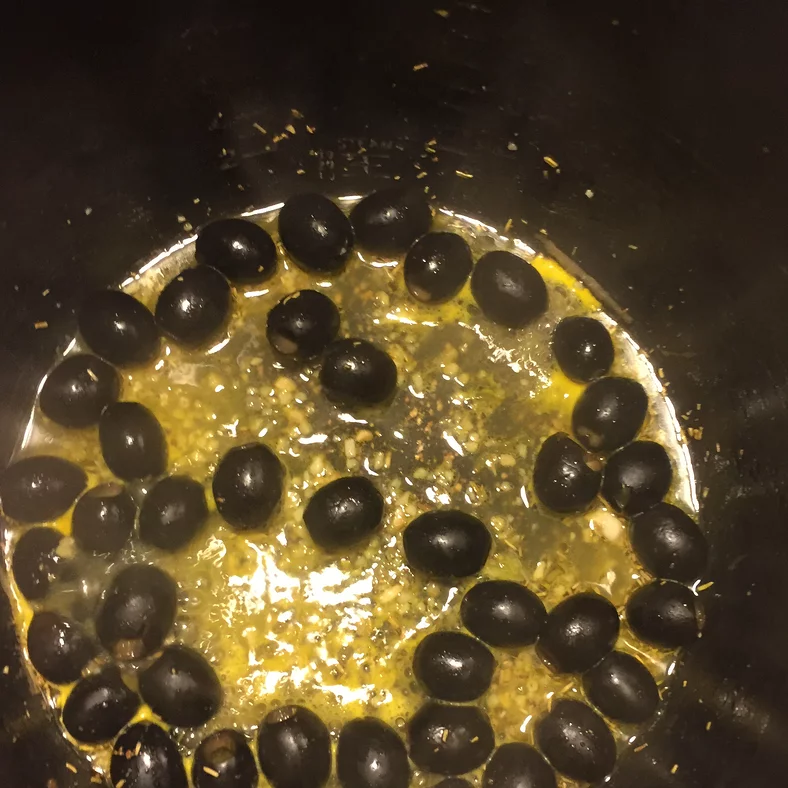

Orange and Rosemary Baked Olives

Description
Low-carb, healthful snack choice which can be kept in the fridge for up to two weeks.
prep:25 mins
cook:15 mins
total:40 mins
Servings:12
Yield:3 cups
Ingredients
- 3 ½ cups whole mixed olives, drained
- ¼ cup dry white wine
- 2 tablespoons fresh orange juice
- 2 tablespoons olive oil
- 2 cloves garlic, minced
- 2 sprigs fresh rosemary
- 2 tablespoons fresh parsley, chopped
- 1 ½ tablespoons chopped fresh oregano
- 4 teaspoons grated orange zest
- ¼ teaspoon crushed red pepper flakes
Steps
- Preheat oven to 375 degrees F (190 degrees C). Stir the olives together with the wine, orange juice, olive oil, and garlic in a 9x13 inch baking dish. Nestle the sprigs of rosemary in the olives.
- Bake in the preheated oven for 15 minutes, stirring halfway through the baking. Remove and discard the rosemary sprigs, then stir in the parsley, oregano, orange zest, and red pepper flakes. Serve warm, or cool the olives and use them to top a salad.